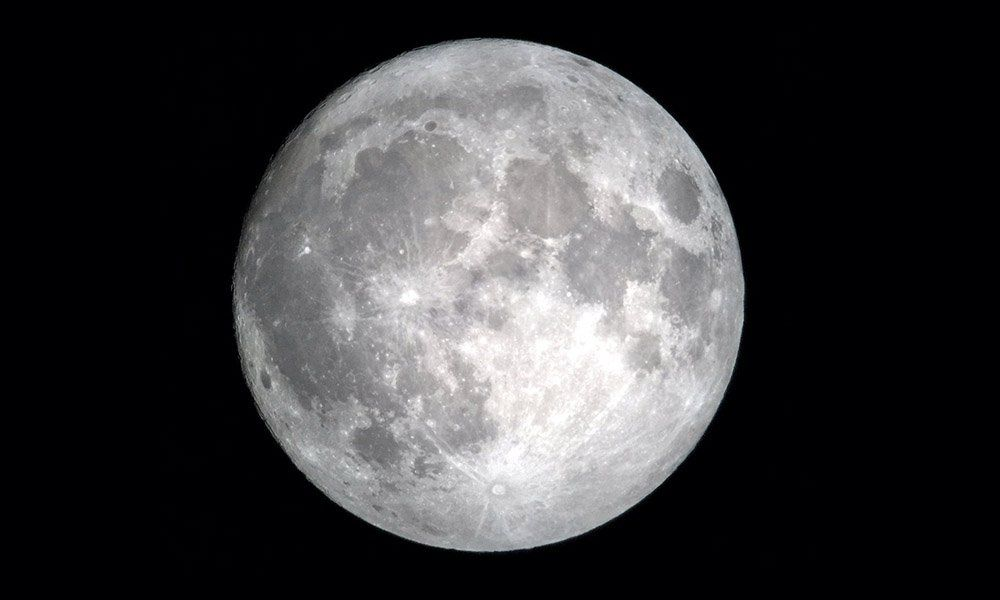
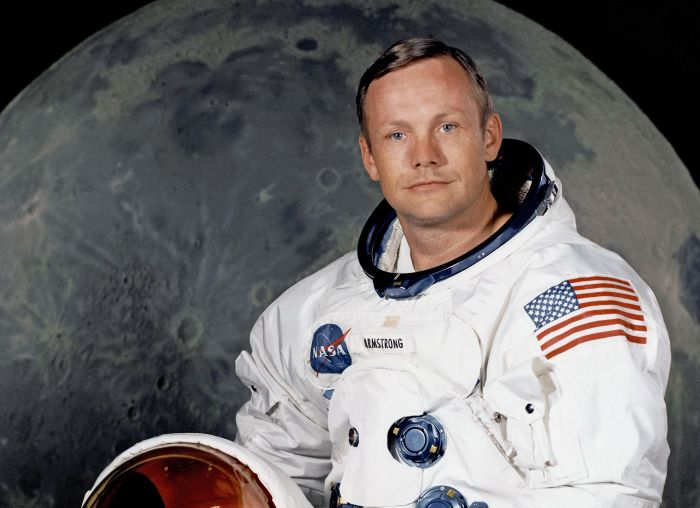

Bulan
Dilansir dari Wikipedia adalah satelit alami Bumi satu-satunya dan merupakan satelit terbesar kelima dalam Tata Surya. Bulan juga merupakan satelit alami terbesar di Tata Surya menurut ukuran planet yang diorbitnya, dengan diameter 27%, kepadatan 60%, dan massa 1⁄81 (1.23%) dari Bumi. Di antara satelit alami lainnya, Bulan adalah satelit terpadat kedua setelah Io, satelit Jupiter.
Bulan berada pada rotasi sinkron dengan Bumi, yang selalu memperlihatkan sisi yang sama pada Bumi, dengan sisi dekat ditandai oleh mare vulkanik gelap yang terdapat di antara dataran tinggi kerak yang terang dan kawah tubrukan yang menonjol. Bulan adalah benda langit yang paling terang setelah Matahari. Meskipun Bulan tampak sangat putih dan terang, permukaan Bulan sebenarnya gelap, dengan tingkat kecerahan yang sedikit lebih tinggi dari aspal cair. Sejak zaman kuno, posisinya yang menonjol di langit dan fasenya yang teratur telah memengaruhi banyak budaya, termasuk bahasa, penanggalan, seni, dan mitologi. Pengaruh gravitasi Bulan menyebabkan terjadinya pasang surut di lautan dan pemanjangan waktu pada hari di Bumi. Jarak orbit Bulan dari Bumi saat ini adalah sekitar tiga puluh kali dari diameter Bumi, yang menyebabkan ukuran Bulan yang muncul di langit hampir sama besar dengan ukuran Matahari, 8sehingga memungkinkan Bulan untuk menutupi Matahari dan mengakibatkan terjadinya gerhana matahari total. Jarak linear Bulan dari Bumi saat ini meningkat dengan laju 3.82±0.07 cm per tahun, meskipun laju ini tidak konstan.
Pembentukan Bulan
Beberapa mekanisme yang diajukan mengenai pembentukan bulan menyatakan bahwa bulan terbentuk pada 4,527 ± 0,010 miliar tahun yang lalu, sekitar 30-50 juta tahun setelah pembentukan tata surya. Penelitian terbaru yang dilakukan oleh Rick Carlson menunjukkan bahwa bulan berusia sekurang-kurangnya 4,4 hingga 4,45 miliar tahun. Hipotesis ini antara lain menjelaskan bahwa fisi bulan berasal dari kerak bumi akibat gaya sentrifugal, penangkapan gravitasi sebelum pembentukan bulan, dan pembentukan bumi dan bulan secara bersama-sama di cakram akresi primordial. Hipotesis ini tidak menjelaskan tinggi momentum sudut dari sistem bumi-bulan.
Hipotesis yang berlaku saat ini menjelaskan bahwa sistem Bumi-Bulan terbentuk akibat tubrukan besar, ketika benda langit seukuran Mars (bernama Theia) bertabrakan dengan proto-Bumi yang baru terbentuk, memuntahkan material ke orbit di sekitarnya yang kemudian berkumpul untuk membentuk Bulan. Hipotesis ini mungkin merupakan hipotesis yang paling menjelaskan mengenai asal usul Bulan, meskipun penjelasannya tidak sempurna.
Tubrukan besar diperkirakan umum terjadi pada awal pembentukan Tata Surya. Pemodelan simulasi komputer mengenai tubrukan besar sesuai dengan ukuran momentum sudut sistem Bumi-Bulan dan ukuran inti Bulan yang kecil. Simulasi ini juga menunjukkan bahwa sebagian besar materi pada Bulan berasal dari planet penabrak, bukannya dari proto-Bumi. Akan tetapi, pengujian terbaru menunjukkan bahwa sebagian besar materi Bulan berasal dari Bumi, bukannya dari penabrak. Bukti meteorit menunjukkan bahwa materi benda langit lainnya seperti Mars dan Vesta memiliki oksigen dan komposisi isotop yang sangat berbeda dengan Bumi, sedangkan Bulan dan Bumi memiliki komposisi isotop yang hampir identik. Pencampuran materi yang menguap pasca tubrukan antara benda langit pembentuk Bulan dengan Bumi diperkirakan menyamakan komposisi isotop mereka, meskipun hal ini masih diperdebatkan.
Orang yang pertama kali ke Bulan
Pada tanggal 20 Juli 1969, astronot Amerika Neil Armstrong mendarat di bulan, dan menjadi manusia pertama yang berjalan di permukaan bulan. Hampir 240.000 mil dari Bumi, Ia adalah seorang pilot militer Amerika. Lahir pada tanggal 5 Agustus 1930, dekat Wapakoneta, Ohio. Ia bergabung dengan National Aeronautics and Space Administration (NASA). sebuah lembaga antaraiksa Amerika (kalau Indonesia namanya LAPAN). Armstrong meninggal pada 25 Agustus 2012, pada usia 82 tahun. Armstrong berangkat ke bulan pada tahun 1969 bersama Michael Collins dan Edwin E. Aldrin, dia adalah bagian dari misi berawak pertama NASA ke bulan. Ketiganya diluncurkan ke luar angkasa pada 16 Juli 1969. Menjabat sebagai komandan misi, Armstrong mengemudikan Modul Bulan ke permukaan bulan pada 20 Juli 1969, dengan Buzz Aldrin di dalamnya. Collins tetap di Modul Komando. Pada 10:56 PM, Armstrong keluar dari Lunar Module. Dia berkata, "Itu adalah satu langkah kecil bagi manusia, satu lompatan raksasa bagi umat manusia," saat dia membuat langkah pertamanya yang terkenal di bulan. Selama sekitar dua setengah jam, Armstrong dan Aldrin mengumpulkan sampel dan melakukan eksperimen. Mereka juga memotret, termasuk jejak kaki mereka sendiri. Kembali pada 24 Juli 1969, pesawat Apollo 11 mendarat di Samudra Pasifik sebelah barat Hawaii. Kru dan pesawat itu diambil oleh U.S.S. Hornet, kemudian ketiga astronot itu dikarantina selama tiga minggu. Setelahnya, ada sebelas astronot lainnya telah mengikuti jejaknya, termasuk Komandan David Scott dan Pilot Modul Bulan James Irwin, yang mengambil foto bersejarah ini (ilustrasi) selama misi bulan Apollo 15 pada tahun 1971.